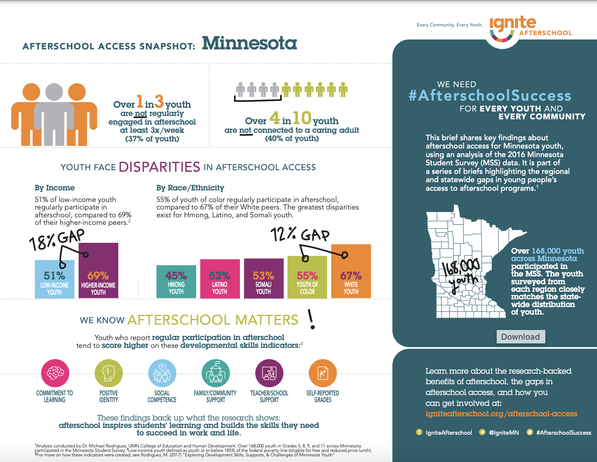
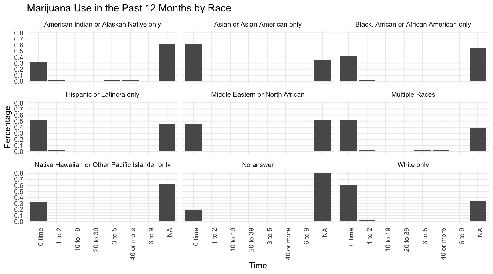
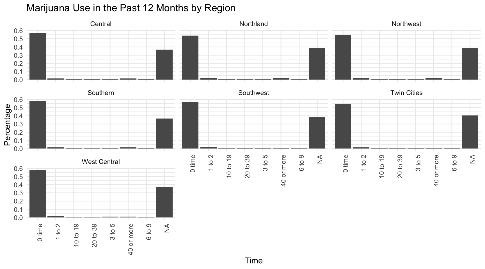
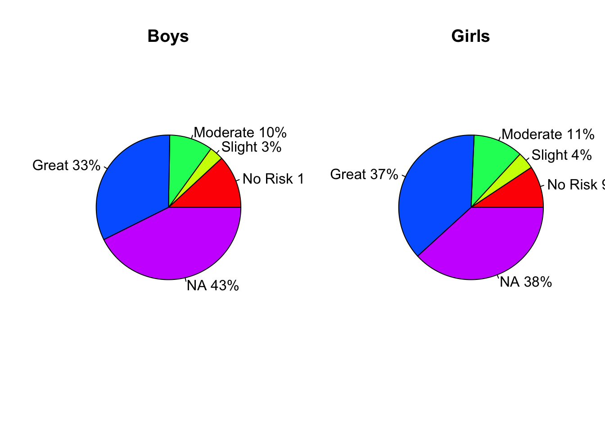
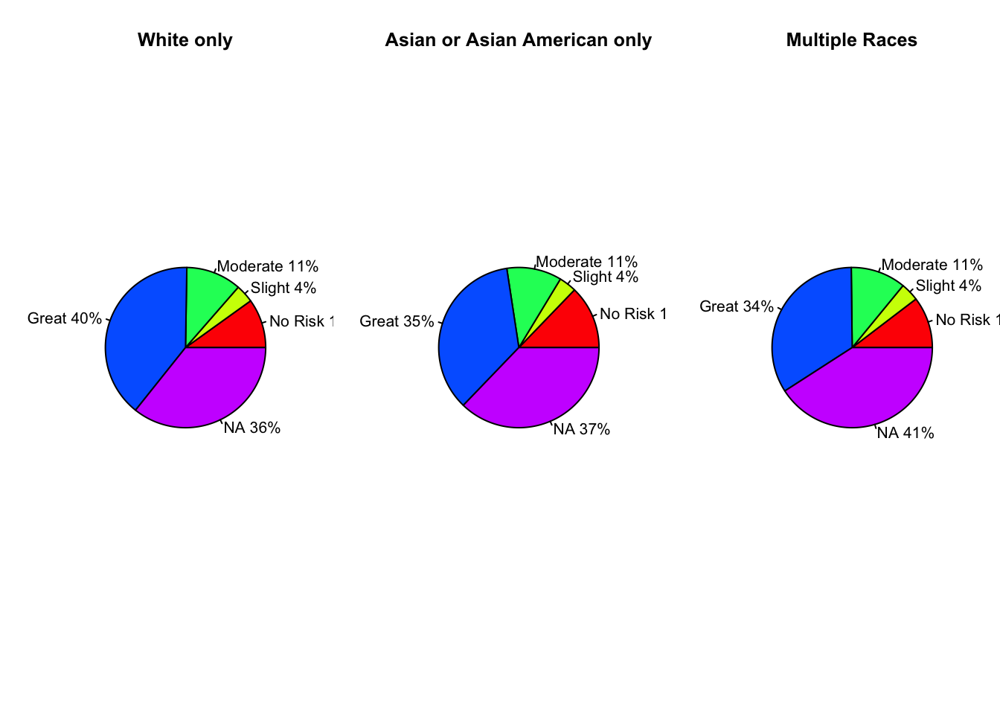
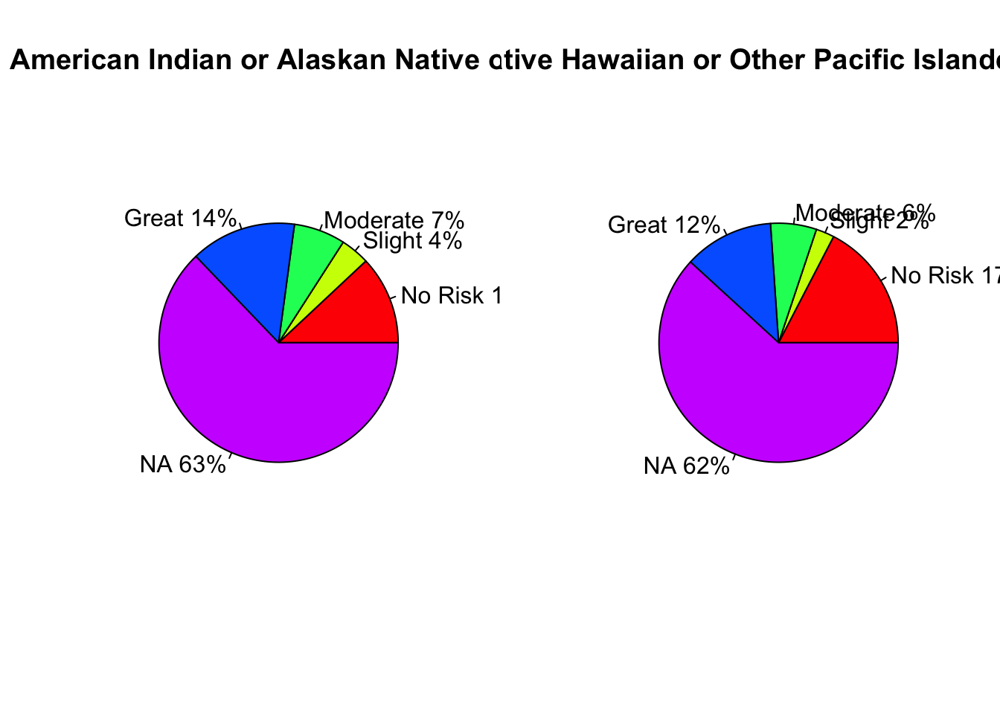
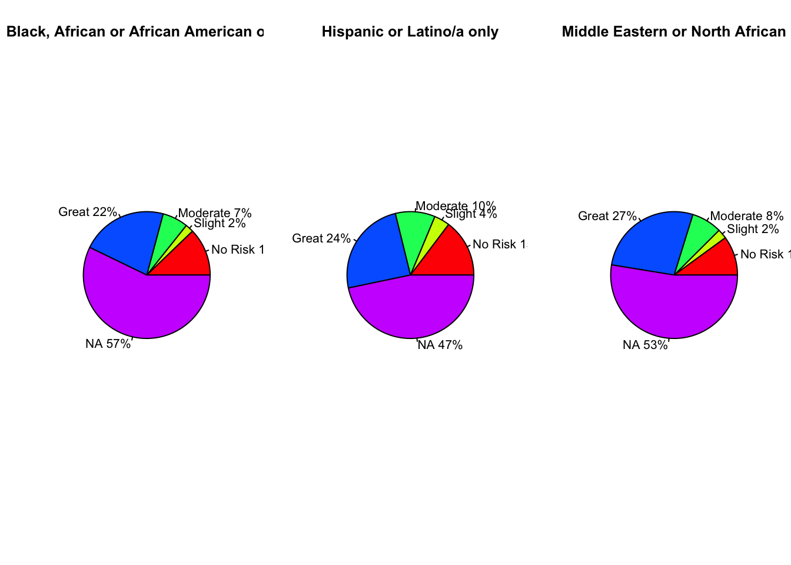
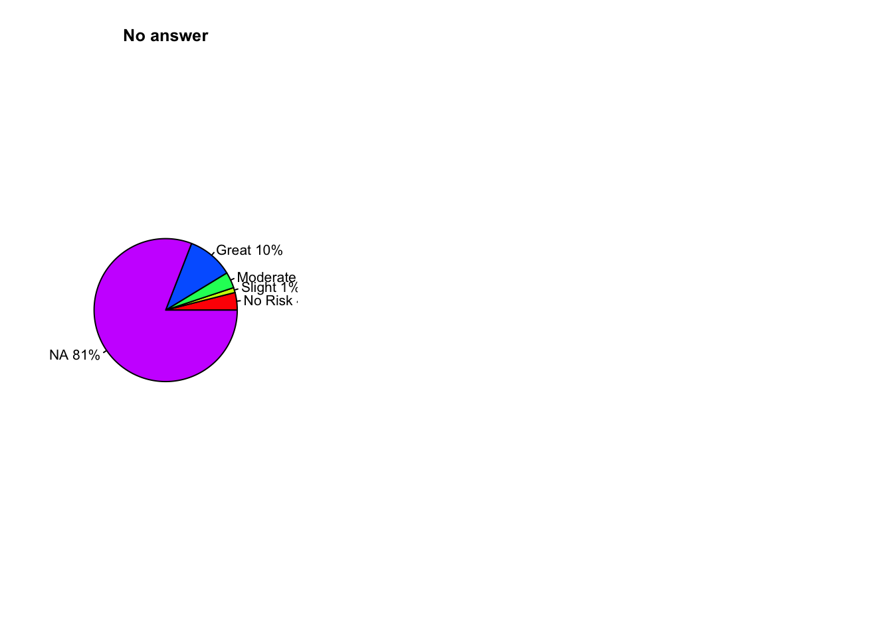

# A tibble: 7 × 4
Region region_perc region_count sum
<chr> <dbl> <dbl> <dbl>
1 Central 14.8 19984 135447
2 Northland 5.02 6804 135447
3 Northwest 2.91 3946 135447
4 Southern 15.0 20368 135447
5 Southwest 4.73 6402 135447
6 Twin Cities 53.1 71899 135447
7 West Central 4.46 6044 135447Ignite Afterschool Project
Project Background
For our project, we have partnered with Ignite Afterschool, an education and advocacy non-profit based in the Twin Cities, to update data briefs that they create for parents and the general public. We have utilized the Minnesota Student Survey to provide answers about after school engagement and outcomes across Minnesota which included analysis of disparities based on race, income, and region.
Our objectives for this project were:
What information is available in the MSS (Minnesota Student Survey) and how can we use it to update the existing briefs?
What other information may be helpful to ignite afterschool’s data briefs and how should we present our findings to them?
What questions on the survey relate to the recent legalization of cannabis in Minnesota? Are there other sources we could draw from to supplement the MSS?
Our questions were largely determined based on Ignite’s needs which were to update the existing briefs using the 2022 survey and have an understanding of what data was available including any information that may be relevant to the recent legalization of cannabis in Minnesota. We first identified variables of interest including race, variables related to being connected to a caring adult, engaging in after school activities 3 times a week, resource related variables, and region. We then found the variables related to drug and alcohol use and presented the available questions to Ignite.

Data Context
Our main data source for this project was the Minnesota Student Survey from 2022. According to the Minnesota Department of Education, the Minnesota Student Survey is one of the longest-running youth surveys in the United States. It is an anonymous statewide survey that is given to grades five, eight, nine, and eleven to gain insight into student experiences. For this project, we will be using the survey collected online by the state of Minnesota in collaboration with local schools in 2022.
The survey is taken every three years with changes made between each one such as wording or new questions. In every administration of the survey at least 81% of schools in Minnesota have participated, in 2022 there were approximately 135,000 individual responses (observations).
According to the Minnesota Department of Education the results of the survey are posted publicly and used by non-state groups to assess student needs and hold public discussions. The state uses the data “to monitor trends, to assess the extent of disparities among population groups, to obtain federal and state funding, and to assist local communities and schools.” According the the Wilder Foundation, an organization that assisted the State in administrating the survey explains that the survey asks about “students’ feelings and experiences related to health and wellbeing, supportive and caring relationships, safety, and engagement in school and activities. It provides students with the opportunity to tell us how they are doing, and what they need to thrive.”
It is important to consider that the survey is administered in school setting to students. Teachers and other staff provide the material and instruct students to complete the survey. Ultimately the survey requires student consent, but there is a still an underlying pressure to participate. Many factors by influence the data including reading level, English proficiency, trust in school and government, boredom, and many other important social contexts. For our project, students not answering questions poses the greatest challenge in interpreting results. As previously mentioned, students may not answer questions for a variety of reasons, and we should consider that an important part of the context when evaluating and representing the results of our analysis.
https://education.mn.gov/MDE/dse/health/mss/mde059027
https://www.wilder.org/wilder-research/research-library/2022-minnesota-student-survey
Analysis
The first steps we had to take involved parsing through the large data dictionary and using two different csv files, one that included included county data but not race, and one that included race but no county data. We then group the observations by regions so that Ignite would be able to create regional briefs similar to the ones they have previously published. Below is a table that displays the regions:
Our project involved quite a bit of wrangling, as the questions Ignite wanted to answer in the briefs were not directly asked in the survey. For example, to determine if a student was engaged 3 or more times a week, we had to create a new variable that took into account a variety of engagement types. For our investigation of income we used the answers to questions about having enough food and stable shelter to determine if a student was low income or not. This process involved us communicating with Ignite to make these choices. but some assumptions were our own which we documented in the brief construction process.
Engaged After school
We calculated if students did at least one of the following activities at least 3 times a week:
- stay at my school or go to another school
- My home or another home such as a friend’s, relative’s or neighbor’s
- A rec, community or other youth center
- A park or other outdoor space
- A library
- A church, synagogue, mosque, or other spiritual/religious place
# A tibble: 7 × 5
Region percent_true percent_false percent_unknown total
<chr> <dbl> <dbl> <dbl> <dbl>
1 Central 76.2 23.8 0 19984
2 Northland 75.5 24.5 0 6804
3 Northwest 74.2 25.8 0 3946
4 Southern 75.2 24.8 0 20368
5 Southwest 72.9 27.1 0 6402
6 Twin Cities 73.6 26.4 0 71899
7 West Central 76.2 23.8 0 6044By Race
# A tibble: 2 × 4
Region white hmong american_indian
<chr> <dbl> <dbl> <dbl>
1 Twin Cities Metro Area 78.0 66.5 70.1
2 Greater Minnesota 77.7 64.7 69.0Caring Adults
Answer of “quite a bit” or “very much” to if either teachers or another staff member at the school care about the student.
# A tibble: 7 × 6
Region percent_true percent_false percent_unknown total PctIncreaseInDontCare
<chr> <dbl> <dbl> <dbl> <dbl> <dbl>
1 Central 46.7 45.0 8.33 19984 3
2 Northl… 44.4 46.1 9.45 6804 3
3 Northw… 47.8 43.7 8.46 3946 2
4 Southe… 46.7 43.8 9.49 20368 13
5 Southw… 48.9 42.1 9.03 6402 3
6 Twin C… 49.7 38.2 12.2 71899 -1
7 West C… 49.0 42.9 8.17 6044 5Income
Skipping meals and experiencing homelessness were used as a proxy for being low income. We also attempted to use resources like access to a laptop or tablet as a proxy, but found a similar study used these variables instead. Ensuring that this was the same way Ignite previously calculated low vs. high income is unfortunately outside of the scope of this project.
# A tibble: 7 × 8
Region total high_income_true high_income_false high_income_na percent_true
<chr> <dbl> <dbl> <dbl> <dbl> <dbl>
1 Central 19984 18105 334 1545 90.6
2 Northland 6804 6038 135 631 88.7
3 Northwest 3946 3533 90 323 89.5
4 Southern 20368 18188 336 1844 89.3
5 Southwest 6402 5697 116 589 89.0
6 Twin Cit… 71899 62893 1034 7972 87.5
7 West Cen… 6044 5494 89 461 90.9
# ℹ 2 more variables: percent_false <dbl>, percent_unknown <dbl>The Cannabis Report
In MSS we identified the following key questions in line with Ignite’s goals for expanding their cannabis education programming:
- Any alcohol and/or other drug used during the past year
- During the last 12 months, have you used marijuana (pot, weed) or hashish (hash, hash oil) (
- During the last 12 months on how many occasions (if any) have you used marijuana or hashish? (Do not count medical marijuana prescribed for you by a doctor)
- During the last 12 months, on how many occasions (if any) have you used synthetic marijuana that you took only to get high
- How much do you think people risk harming themselves physically or in other ways if they use marijuana once or twice per week
We prioritized answering questions 3 and 5 per Ignite’s request and found that for question 3 there was very little variance in frequency of use across race and region as almost all students selected 0 times or did not answer.
Question 3
During the last 12 months on how many occasions (if any) have you used marijuana or hashish? (Do not count medical marijuana prescribed for you by a doctor)


Question 5
How much do you think people risk harming themselves physically or in other ways if they use marijuana once or twice per week
For question 5 we found that there is a larger amount of girls (37%) than boys (33%) who consider others using marijuana two or more times a week a “Great” risk to their health.

For results based on race we see 3 main categories.
Highest Perception of risk:
White only, Asian or Asian American only and multiple races all had a greater amount of students who considered others using marijuana two or more times a week a “Great” risk to their health ranging.
Lowest Perception of risk or not applicable:
American Indian or Alaskan Native and Native Hawaiian or Other Pacific Islanders in comparison had much lower amounts of students responding “Great” risk with more students giving no answer. It is important to note that these two racial groups are the smallest out of all respondents.
Moderate Perception of risk:
Black, African or African American only, Hispanic or Latino/a only, and Middle Eastern or North African respondents were some where between the previous groups with lower levels of no answer, but also lower levels of “Great” responses.




Students who did not answer the race question, also tended to not answer the 5th cannabis question.
Ethical Considerations
While we did find some difference in opinions of the risk of cannabis by race and sex, we find that difference mainly comes from students not answering the question. Students may feel uncomfortable disclosing about cannabis because they were advised not to, cultural beliefs, or maybe they don’t have an opinion on the question. It is possible that this data could be used to focus cannabis education programs or as part of a larger explanation as to how groups respond to survey questions and have been socialized to perceive risk. However, from an ethical perspective we believe that further evidence is required to draw any conclusions and our analysis should only be used as a starting point. It is also crucial to consider how the results of our data may be misinterpreted or used to uphold racial stereotypes. The purpose of the survey is to collect information on how students think and feel, so the use of data should also serve the purpose of improving programming and education for students.
Many non-profits like Ignite take an act role in closing the gaps that students face in education whether that be access to after school programming, or other disparities within Minnesota schools. Any policy and advocacy focused group should be fully informed as to how the data was collected, analyzed, and interpreted. This blog post serves to explain the findings of our project in an accessible manner. It is also an important consideration that we as students can make mistakes and because of this it is important to double check our findings before they may be published for public use like in a data brief.
Main Takeaways and Future Directions
This project is important for understanding youth behaviors, opinions, and their involvement with after school activities. New developments reflected in this survey are the COVID-19 pandemic and the legalization of cannabis in Minnesota. Our analysis updates the already known disparities in after school participation across race and class. Additionally, we find that cannabis usage amongst youth does not vary significantly by race or region, but we did find that youth opinions on the risk of cannabis use does vary slightly by sex, with girls viewing usage as a greater risk than boys. We also see that across racial groups there is quite a bit of variation with some groups answering that there is a “Great” risk but ultimately the groups that did not rate the risk as high, simply did not answer the question instead of selection one of the other risk options.
Our project addressed key areas of the current Ignite Afterschool data briefs, but with the constraints of our project we were not able to reproduce all of the data required. In order to complete the briefs one would have to clarify and correct if necessary the assumptions made in the wrangling and calculation process. Additionally future directions for this project could include a more in depth look at the cannabis questions and attempt to make comparisons with other states to provide more information to how legalization may affect students as this survey was taken in 2022 before the legalization of cannabis in Minnesota.